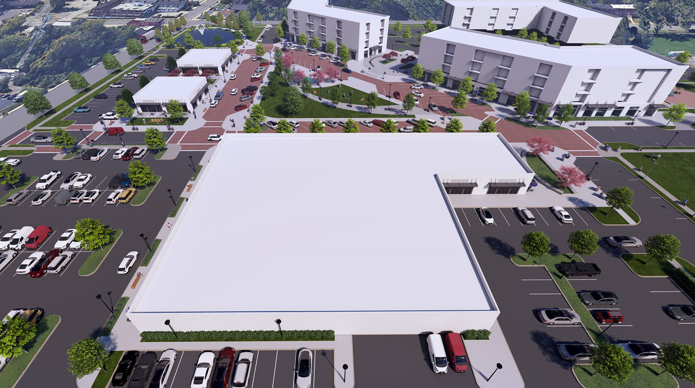
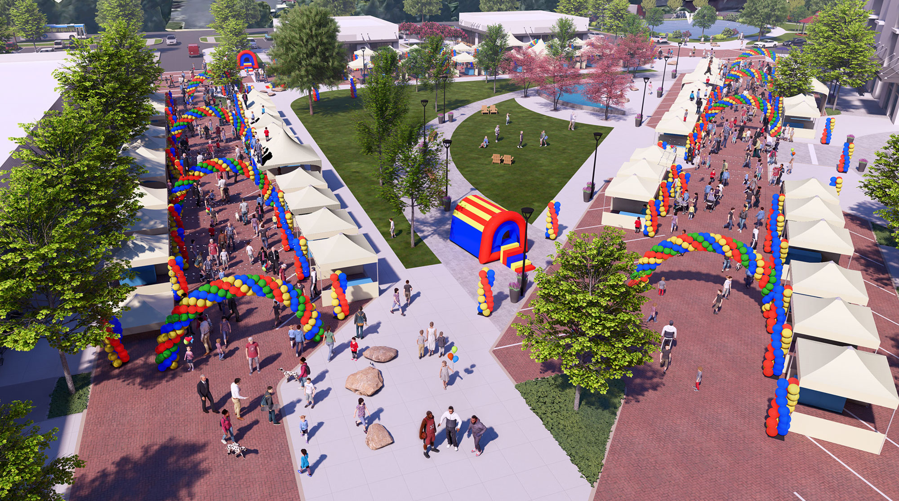
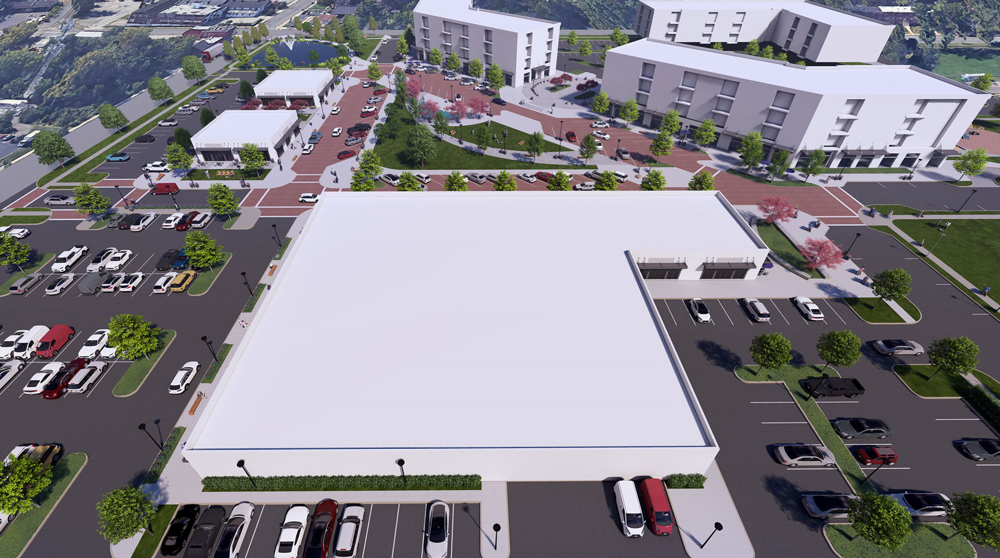
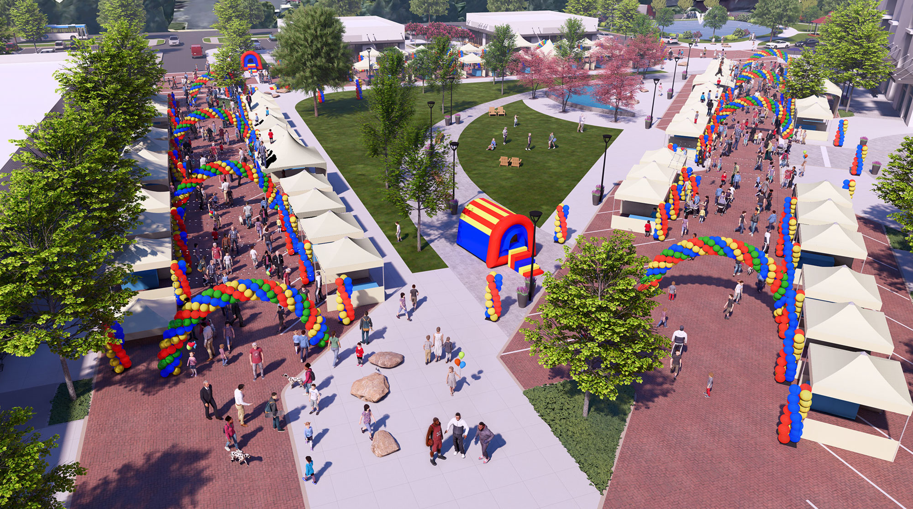

36,000 square feet
Supermarket and Restaurants
The Preserve at Stony Creek reimagines the former Norristown State Hospital as a destination for current and future residential, commercial, technology and innovation development, job creation, and retail experiences, while connecting to the existing amenities of Norristown State Park, Elmwood Zoo, and all of the benefits which exist in the heart of Montgomery County.
Supermarket and Restaurants
Flex/Tech/Office Space
Modern Affordable Housing
Modern Amenities
 




Pinnacle Realty Development Company was started by David Perlman and Anthony Maras to acquire developable properties, often in blighted and/or underserved areas. David and Tony are proud of their accomplishments on projects such as 650 Fairmount (407 unit redevelopment in Philadelphia); The Heid Building (adaptive re-use in Philadelphia), 600,000 sq ft High-Bay cold/ambient Automated Storage building in Middletown, De, River Pointe (618 total units in Bridgeport, PA).